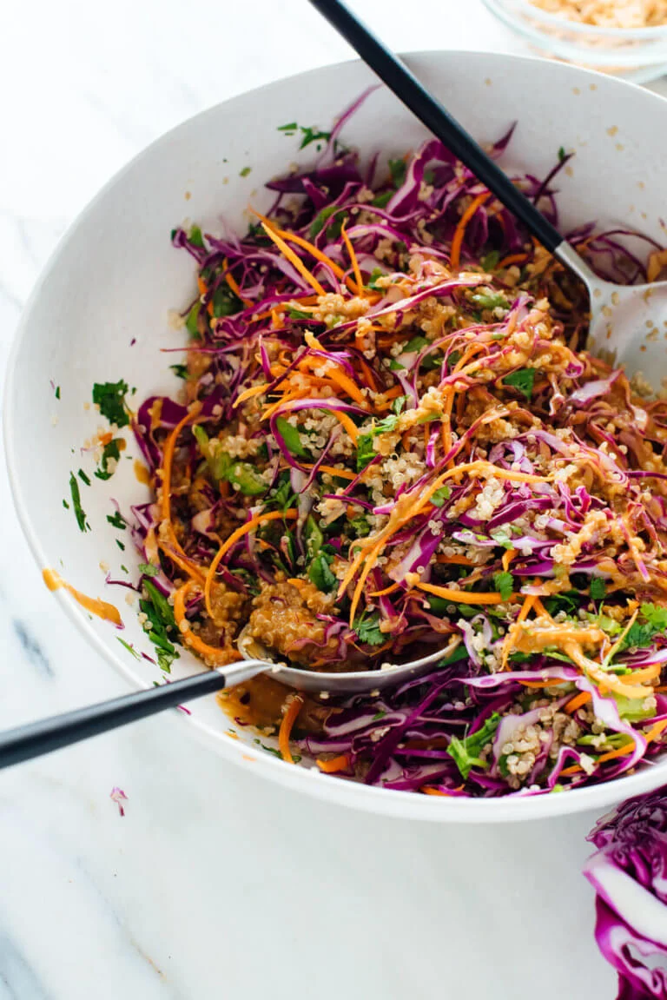

Thai Peanut & Quinoa Salad

Ingredients:
- ¾ cup uncooked quinoa or millet
- 1 ½ cups water
- 2 cups shredded purple cabbage
- 1 cup grated carrot
- 1 cup thinly sliced snow peas or sugar snap peas
- ½ cup chopped cilantro
- ½ cup chopped cilantro
- ½ cup chopped cilantro
Instructions:
- Cook the quinoa: First, rinse the quinoa in a fine mesh colander
under running water. In a medium-sized pot, combine the rinsed
quinoa and 1 ½ cups water. Bring the mixture to a gentle boil over
medium heat, then reduce the heat to medium-low and gently simmer
the quinoa until it has absorbed all of the water. Remove the
quinoa from heat, cover the pot and let it rest for 5 minutes.
Uncover the pot and fluff the quinoa with a fork. Set it aside to
cool.
- Meanwhile, make the peanut sauce: Whisk together the peanut
butter and tamari until smooth (if this is difficult, microwave
the mixture for up to 30 seconds to loosen it up). Add the
remaining ingredients and whisk until smooth. If the mixture seems
too thick to toss into the salad, whisk in a bit of water to
loosen it up (I didn’t need to do this).
- In a large serving bowl, combine the cooked quinoa, shredded
cabbage, carrot, snow peas, cilantro and green onion. Toss to
combine, then pour in the peanut sauce. Toss again until everything
it lightly coated in sauce. Taste, and if it doesn’t taste quite
amazing yet, add a pinch of salt and toss again. Divide into
individual bowls and garnish with peanuts.
- This salad keeps well, covered and refrigerated, for about 4 days.
If you don’t want your chopped peanuts to get soggy, store them
separately from the rest and garnish just before serving.